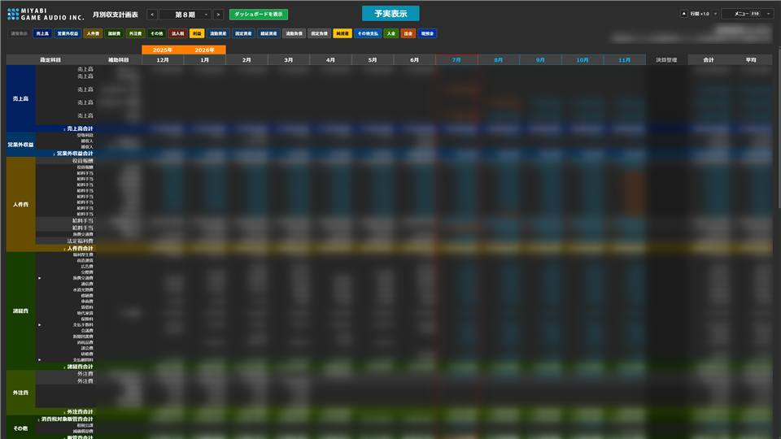
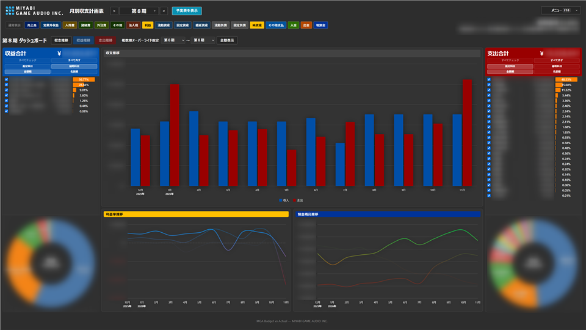
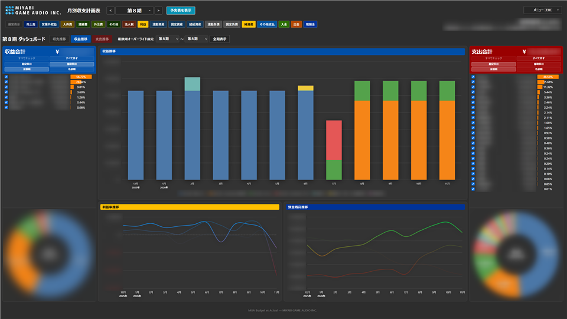
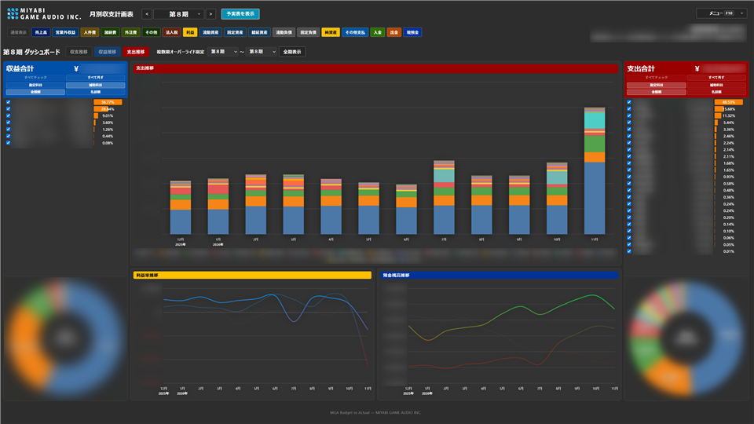
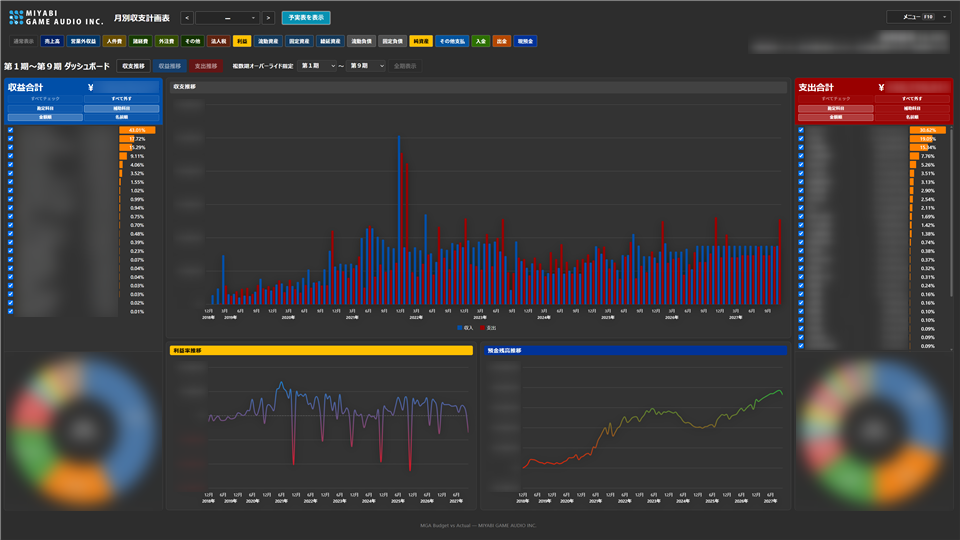

1. このアプリの特色と魅力
画面例（科目名・金額の一部はぼかしています）。クリックで拡大します。





従来の仕訳帳や総勘定元帳は、あくまで「過去に何が起きたか」を正確に残す道具です。経営判断に本当に必要なのは、そこから一歩進んだ問い——来月・来期に資金と利益はどう推移しそうか——です。本アプリは、マネーフォワード クラウド会計の CSV を取り込み、月別の収支計画表（予実表）として「実績」と「計画」を同じ表で扱えるようにします。
市販の経営管理・予実管理パッケージは強力ですが、ライセンス費用や導入・保守の負担が大きく、中小企業や一人経理・少人数の会社では「欲しいが手が届かない」ことが少なくありません。MGA Budget vs Actual は、ブラウザで開くだけで使える無料の予実計画ツールとして、そのギャップを埋めます。サーバー構築も不要です。
さらに魅力なのはカスタムの柔軟さです。仕訳の振り分け定義、税率、受注・人件費・外注・納税の計画、行の表示や色、CSV ファイル名のパターンまで、自社の会計運用に合わせて調整できます。設定はブラウザに保存され、エクスポート／インポートで別端末にも移せます。
未来を計画できる … 仕訳実績の延長ではなく、受注・人件費・外注・税金などを先に置いて予測できます。予実が同じ表で見える … 月ヘッダーで実績／計画の境界を切り替え、今期の混在表示も可能です。来期の税金・予定納税をシミュレートできる … 来期納税見込で、翌期に支払う税金や予定納税のスケジュールを試算し、資金繰りの見通しに使えます。無料で、自由に改変できる … MIT License。高価な予実パッケージなしに始められ、自社向けにソースを直して育てることもできます。自社向けに育てられる … 科目定義・税率・表示・色を柔軟にカスタムできます。ドリルダウンで納得できる … 実績セルから仕訳明細へ辿れ、数字の根拠を確認できます。創業から現在までの利益率・預金残高をグラフで見られる … ダッシュボードは今期だけでなく、「全期表示」や期範囲の指定で長期の流れを描けます。単年の凸凹に振り回されず、収益力が定着しているか・資金余力は厚くなっているかを俯瞰でき、先の計画を置くときの根拠にもなります。
2. プライバシー（データはローカルのみ）
このアプリは、一切の利用者情報を収集しません 。アクセス解析・広告トラッキング・外部への利用報告なども行いません。
会計 CSV・計画値・税率や仕訳定義などの設定は、あなたの端末上にしか存在しません （ブラウザの保存領域と、あなたが選んだ CSV フォルダ）。アプリの処理はブラウザ内だけで完結し、いかなるデータもネットへアップロードされることはありません 。
補足
3. 前提（マネーフォワード CSV）
このアプリは マネーフォワード クラウド会計 のエクスポート CSV があることが前提です。マネーフォワード以外の会計ソフトをご利用の場合は非対応 です。無理に先へ進む必要はありません。
対応: マネーフォワード クラウド会計から出力した CSV非対応: freee・弥生・その他の会計ソフトの CSV（対応予定はありません）
必ず用意する 3 ファイル
クラウド会計から、次の 3 種類をエクスポートし、同じ期のサブフォルダ に置いてください（配置の前提は後述）。
種類 イメージ 既定のファイル名
仕訳データ
期間を指定して出力する仕訳の一覧
仕訳データ_YYYY-MM-DD_YYYY-MM-DD.csv
貸借対照表
月次推移 の貸借対照表貸借対照表_月次推移_YYYYMMDD_HHMM.csv
総勘定元帳
総勘定元帳の CSV
総勘定元帳_YYYYMMDD_HHMM.csv
マネーフォワードからの出力方法
マネーフォワード クラウド会計での出力手順は次のとおりです。
仕訳データ
会計帳簿 → 仕訳帳 → エクスポート（MF 形式）
「エクスポートの内容を選択して下さい」と出たら、何も変更せずそのままエクスポートで構いません。
総勘定元帳
会計帳簿 → 総勘定元帳（未実現仕訳は「含む」をチェック）→ エクスポート（CSV 出力）
「出力する項目を選択」と出たら、「全科目選択する」にチェックを入れて出力してください。
貸借対照表
会計帳簿 → 推移表（未実現仕訳は「含む」をチェック）→ エクスポート（貸借対照表 CSV）
未実現仕訳について
つまずきやすい点
貸借対照表は推移表から出す「貸借対照表 CSV」（月次推移）である必要があります（単月だけの表では不足します）。
3 種類とも揃っていないと読み込みに失敗します。
ファイル名が既定と違う場合は、メニュー「その他」の CSV名定義 でパターンを合わせられます。ただし中身の形式自体はマネーフォワードであることが前提です。
同名が複数あるときは、ファイル名の新しい方を使います。古い出力が残っていると意図しない期が選ばれることがあります。
複数期の CSV を一つのフォルダにフラットに置かないでください。下の「CSV の配置（期ごとのフォルダ）」が前提です。
CSV の配置（期ごとのフォルダ）
CSV の配置は 期ごとのサブフォルダ構成を前提 とします。会計期が進むと CSV は複数期分になるため、親フォルダ直下にフラットに置かず、期ごとにフォルダを分けてください。アプリはサブフォルダも検索するため、親フォルダを一度選べば全期を読み込めます。
MF-CSV/ ← アプリで選択するフォルダ（名前は何でも良い）
├── 第1期/
│ ├── 仕訳データ_2018-12-07_2019-11-30.csv
│ ├── 貸借対照表_月次推移_20191201_1200.csv
│ └── 総勘定元帳_20191201_1200.csv
├── 第2期/
│ ├── 仕訳データ_2019-12-01_2020-11-30.csv
│ ├── 貸借対照表_月次推移_20201201_1200.csv
│ └── 総勘定元帳_20201201_1200.csv
└── 第8期/
├── 仕訳データ_...
├── 貸借対照表_月次推移_...
└── 総勘定元帳_...フォルダ名は 第1期・第2期 … のように期が分かればよく、厳密な命名規則はありません。同じ期の 3 種類は、必ず同じサブフォルダに揃えてください。複数期の CSV を一つのフォルダに混ぜて置かないでください。
任意：人件費マスタ用
メニュー「人件費」で、マネーフォワード給与の 従業員情報 CSV を読み込むと、従業員マスタを一括生成できます。会計 CSV 本体とは別で、必須ではありません。
補足：従業員情報 CSV は置きっぱなし不要 読み込み時に一度あれば十分 で、会計 CSV フォルダに置き続ける必要はありません。取り込み後は削除して構いません。
4. はじめて使う（起動と CSV の準備）
必要なもの
Google Chrome または Microsoft Edge（フォルダ選択機能のため）
前セクションで用意した、マネーフォワード クラウド会計の CSV 3 種類が入ったフォルダ
起動手順
ブラウザでアプリを開きます。https://mga-ueda.github.io/MGA-Budget-vs-Actual/
初回は「CSV フォルダの選択」画面が表示されます。「フォルダを選択」をクリックするか、フォルダをドロップします。
仕訳・貸借対照表・総勘定元帳の CSV が読み込まれると、月別収支計画表（予実表）が表示されます。
2回目以降は、前回選んだフォルダから自動で読み込みを試みます。権限確認が出た場合は「読み込む」を押してください。
5. 画面の見かた
ヘッダー
期ナビ （< / 期選択 / >）… 表示する会計期を切り替えます。表示モードバッジ … 「予実表示」（今期）・「実績表示」（過去期）・「計画表示」（来期）など、今見ている内容の性質を示します。ダッシュボードを表示 … チャート画面へ。設定画面にいるときは「予実表を表示」に変わります。メニュー F10 … 予実表／ダッシュボード／各種設定／操作（読込・入出力）を開きます。
ツールバーと KPI
ツールバーのセクション名をクリックすると、その大項目だけを表示できます（再クリックで通常表示、Ctrl+クリックで個別オン／オフ）。
右上付近の KPI（総利益率、労働分配率など）は、今見ている期の健全性を素早く掴むための指標です。ホバーで計算の考え方を確認できます。
予実表の行名先頭の ∑ は、アプリが集計した行を示す印です（詳細は「予実の確認方法」を参照）。
メニュー構成
区分 項目 役割
画面 予実表 / ダッシュボード メインの確認画面 設定 受注 / 税率定義 / 来期納税見込 / 仕訳定義 / 支払い / 人件費 / 外注費 / 表示 / 色 / その他 計画入力と見た目・定義 操作 エクスポート / インポート / 再読み込み / フォルダ変更 設定保全と CSV 更新（フォルダ変更は参照先を変えるときのみ） ヘルプ 取扱説明書 この文書を新規ウィンドウで開く バージョン v 1.00 更新履歴 バージョン表示。「更新履歴」で GitHub のコミット履歴を開く
7. 予実の確認方法
メニュー → 予実表 （またはヘッダーの「予実表を表示」）でメイン表に戻ります。
期ナビで見たい会計期を選びます。今期なら実績と計画が並ぶ「予実表示」になります。
ツールバーで売上高・人件費・諸経費など注目セクションだけに絞り込みます。
KPI（総利益率・労働分配率など）で全体感を掴み、気になる行を展開して内訳を見ます。
実績セルをダブルクリックし、仕訳明細で「なぜその金額か」を確認します。
計画側は設定画面または計画セル編集で直し、表を更新して差分の見通しを何度でも見直します。
読み方のコツ
∑（シグマ）が付いた行 ∑ が付いている行は、仕訳や貸借対照表の CSV にそのまま存在する科目ではなく、アプリ側で集計・合成した行 です（例: セクション合計、人件費合計、法人税合計など）。ホバーすると計算式のヒントが出る場合があります。CSV の明細そのものと見間違えないよう、∑ を目印にしてください。
8. ダッシュボードの操作
数字の表だけでなく、推移を視覚で掴みたいときに使います。今期などの短期だけでなく、創業から現在までの長期 も同じ画面で見られます。
ヘッダーの ダッシュボードを表示 、またはメニューの「ダッシュボード」を選びます。
チャートモードを切り替えます。
収支推移 … 収益と支出のバランス収益推移 … 入ってくる側支出推移 … 出ていく側
下段には 利益率推移 と 預金残高推移 も表示されます。短期の凸凹だけでなく、創業以降の収益力や資金余力の傾向を一目で確かめられます。
サイドバーで表示する項目をチェック／解除します。Ctrl+クリックでその項目だけに絞れます。
内訳を「勘定科目」または「補助科目」に切り替え、並びを「金額順」「名前順」から選びます。
開始期〜終了期を指定するか 全期表示 で、創業期から現在までの流れを一気に見ます。単年の良し悪しに振り回されず、構造的な改善・悪化や季節性の繰り返しを把握しやすくなり、先の計画を置く根拠にもなります。
チャート上で右クリックすると、単体表示・非表示・全てを表示などの操作ができます。
終わったら「予実表を表示」で表に戻ります。
9. 日常の更新と設定の保全
いつ CSV を更新するか
マネーフォワード クラウド会計から CSV を出し直すタイミングの目安は、月初 です。
先月分の仕訳にミスがない（または修正が終わった）状態であること
金額の大きい入出金が一通り済んだあとであること
このあと CSV をエクスポートしてフォルダに置き、アプリ側で読み込み直します。途中経過の数字を何度も取り込むより、月次の区切りでまとめて更新する方が見通しが安定しやすいです。
会計 CSV を読み込み直すとき
メニュー → 再読み込み … 同じフォルダから最新 CSV を読み直します。
メニュー → フォルダ変更 … 参照する CSV フォルダ自体を変えたいときだけ使います。同じフォルダを使い続ける場合は不要です（日常の更新は「再読み込み」で足ります）。
設定のバックアップ
エクスポート … 計画・定義・表示などの設定を JSON で保存します。インポート … 保存した JSON を読み込み、設定を復元します。
計画やカスタム定義はブラウザ内に保存されます。端末変更やブラウザのデータ削除に備え、節目ごとにエクスポートしておくことをおすすめします。
10. うまく使うためのヒント
まずは受注・人件費・外注など「金額が大きいレバー」から計画を置き、細部は後から詰めると早く全体像が見えます。
CSV の取り直しは月初がおすすめです。先月の仕訳が固まり、大きい入出金が終わってからにすると安心です。
予実表で ∑ 付きの行はアプリ集計行です。CSV の勘定そのものではありません。
科目の分類が意図と違うときは、表示設定より先に仕訳定義 を疑うと早いです。
外注費で源泉の情報行が出る／出ないは、法人判定文字 と補助科目名の一致で決まります。
同じ金額を先の月まで続けるなら、Shift +Enter の一括反映を活用してください。
注目したい行は「表示」の塗り色、または行の右クリックで目立たせるとレビューが楽になります。
メニューのショートカットキー（各項目右端の文字）や F10 で、設定⇔表の往復が速くなります。
11. ライセンス（無料・自由に改変可）
MGA Budget vs Actual は MIT License （Copyright © MIYABI GAME AUDIO INC.）の下で公開している、無料 のオープンな Web アプリです。
無料 … 利用料はかかりません。ブラウザで開いてすぐ使えます。自由に改変してよい … ソースのコピー・改変・再配布、自社向けのカスタムや社内ツール化も歓迎です。商用・非商用どちらも可 … MIT の条件（ライセンス表記の保持など）を守れば、用途を問いません。
お願い
不具合の可能性や税務上の責任については、
免責事項 を必ずお読みください。
詳細はリポジトリの LICENSE を参照してください。ファビコンの絵文字画像は Twemoji（CC BY 4.0）です。
12. 免責事項
本アプリは、MIYABI GAME AUDIO INC. での運用を前提に開発・デバッグ したものです。他社や他の会計運用での十分な検証は行っておらず、不具合がある可能性が大いにあります 。表示や計算の結果をそのまま正しいものとして扱わないでください。
法人税・消費税・源泉所得税・予定納税など、税金まわりの試算や表示に誤りがあった場合でも、当社は一切の責任を負いません 。納税額の確定や申告・届出の判断には使わず、必要に応じて税理士など専門家にご相談ください 。
本アプリは資金繰りや予実の見通しを助けるための道具であり、会計・税務に関する助言を提供するものではありません。MIT License の無保証にも従い、利用はすべて自己責任でお願いします。